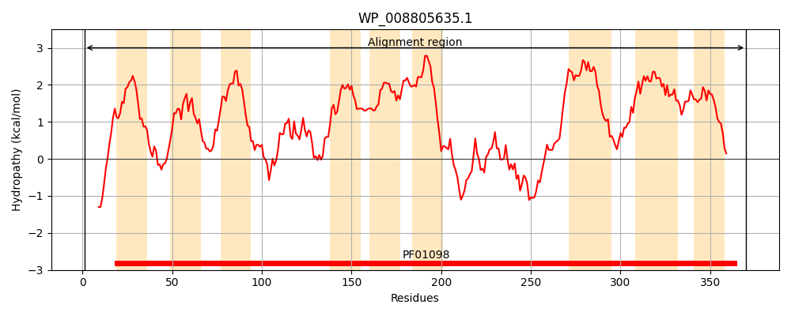
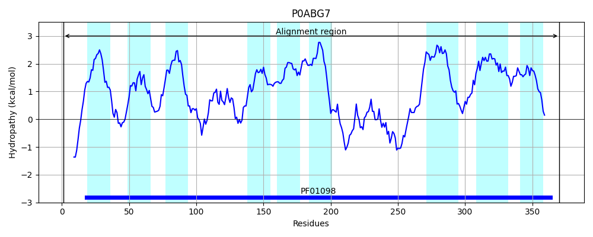
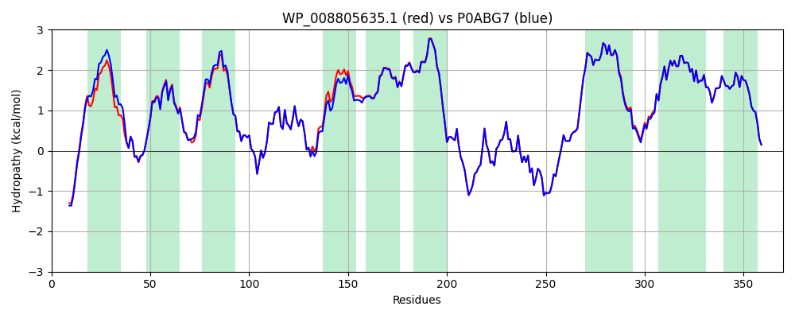

Hit Accession: P0ABG7
Hit TCID: 2.A.103.1.2
Hit Description: gnl|BL_ORD_ID|8703 gnl|TC-DB|P0ABG7|2.A.103.1.2 Rod shape-determining protein rodA - Escherichia coli.
Mach Len: 370
e:0.000000
Query TMS Count : 9
Hit TMS Count: 9
TMS-Overlap Score: 8.800000
Predicted Substrates:CHEBI:61496;alpha-D-FucNAc4-(1->4)-beta-D-ManNAcA-(1->4)-D-GlcNAc-undecaprenyl diphosphate(3-)
BLAST Alignment:
Score: 1823 , Bit scores: 706 bits, E-value: 0.0e+00, Alignment length: 370, Percentage identity: 96
Query: 1 MTDNPNKKSLWDKIHLDPTMLLILLALLTYSALVIWSASGQDVGMMERKIGQIAMGVVIMIVMAQIPPRVYEGWAPYLYIFCIILLVAVDAFGAISKGAQRWLDLGIVRFQPSEIAKIAVPLMVARFINRDVCPPSLKNTAIALVLIFLPTLLVAAQPDLGTSILIALSGLFVLFLSGLSWRLIGIAVVLVAAFIPILWFFLMHDYQRQRVMMLLDPETDPLGAGYHIIQSKIAIGSGGLRGKGWLHGTQSQLEFLPERHTDFIFAVLAEELGLIGVLILLALYILLIMRGLWIAAQAQTTFGRVMAGGLMLILFVYVFVNIGMVSGILPVVGVPLPLVSYGGSALIVLMAGFGIVMSIHTHRKMLSKSV 370
MTDNPNKK+ WDK+HLDPTMLLILLALL YSALVIWSASGQD+GMMERKIGQIAMG+VIM+VMAQIPPRVYEGWAPYLYI CIILLVAVDAFGAISKGAQRWLDLGIVRFQPSEIAKIAVPLMVARFINRDVCPPSLKNT IALVLIF+PTLLVAAQPDLGTSIL+ALSGLFVLFLSGLSWRLIG+AVVLVAAFIPILWFFLMHDYQRQRVMMLLDPE+DPLGAGYHIIQSKIAIGSGGLRGKGWLHGTQSQLEFLPERHTDFIFAVLAEELGL+G+LILLALYILLIMRGLWIAA+AQTTFGRVMAGGLMLILFVYVFVNIGMVSGILPVVGVPLPLVSYGGSALIVLMAGFGIVMSIHTHRKMLSKSV
Sbjct: 1 MTDNPNKKTFWDKVHLDPTMLLILLALLVYSALVIWSASGQDIGMMERKIGQIAMGLVIMVVMAQIPPRVYEGWAPYLYIICIILLVAVDAFGAISKGAQRWLDLGIVRFQPSEIAKIAVPLMVARFINRDVCPPSLKNTGIALVLIFMPTLLVAAQPDLGTSILVALSGLFVLFLSGLSWRLIGVAVVLVAAFIPILWFFLMHDYQRQRVMMLLDPESDPLGAGYHIIQSKIAIGSGGLRGKGWLHGTQSQLEFLPERHTDFIFAVLAEELGLVGILILLALYILLIMRGLWIAARAQTTFGRVMAGGLMLILFVYVFVNIGMVSGILPVVGVPLPLVSYGGSALIVLMAGFGIVMSIHTHRKMLSKSV 370 | Protein Hydropathy Plots: |
|---|
|  |  |
Pairwise Alignment-Hydropathy Plot:
|
|---|
|  |